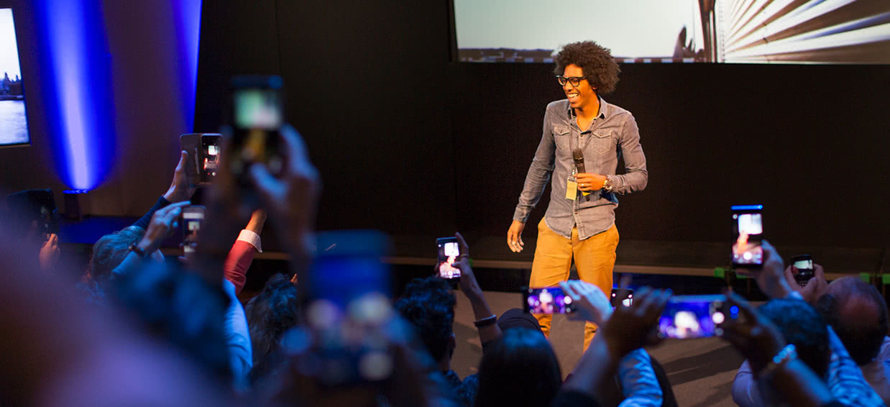
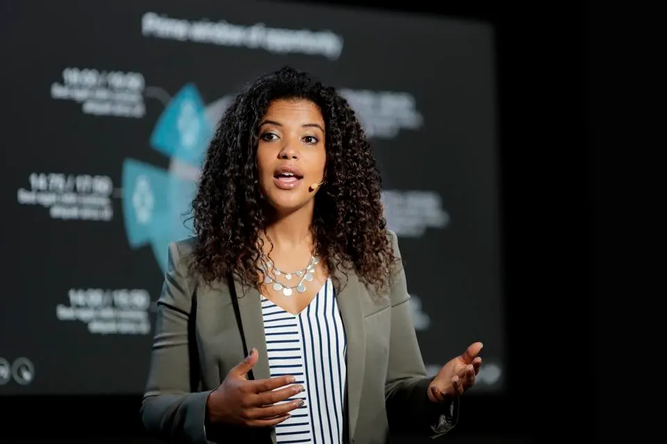

History
TechCon began in 2010 with the aim of bringing together innovators, developers, and thought leaders in technology.
Over the years, it has grown from a small local meetup to a global annual conference, attracting speakers and attendees
from around the world.

Each year, the conference evolves—introducing new tracks, workshops, and networking opportunities.
The 2023 edition drew over 2,000 delegates from 30 countries, featuring cutting-edge talks in AI, Web3, and cloud computing.
Mission
Our mission at TechCon is to empower individuals and organizations by facilitating knowledge exchange,
fostering innovation, and nurturing community in the tech ecosystem. We believe in inclusive education,
open collaboration, and driving forward technology that benefits society.
Past Speakers

Dr. Jane Doe
A renowned AI researcher and author, Dr. Jane Doe delivered the keynote “Machine Learning for Good”
at TechCon 2022. Her work focuses on ethical uses of AI and has influenced several public policy initiatives.

Mr. John Smith
John Smith is a cloud architect and open source advocate. He presented on large-scale infrastructure design
and container orchestration. His tools are used by multiple tech firms worldwide.

Ms. Emily Lee
Emily Lee is a developer tools engineer and front-end specialist. Her talk “Designing for the Next Web” at TechCon 2023
drew acclaim for its insight into performance, accessibility, and user experience.